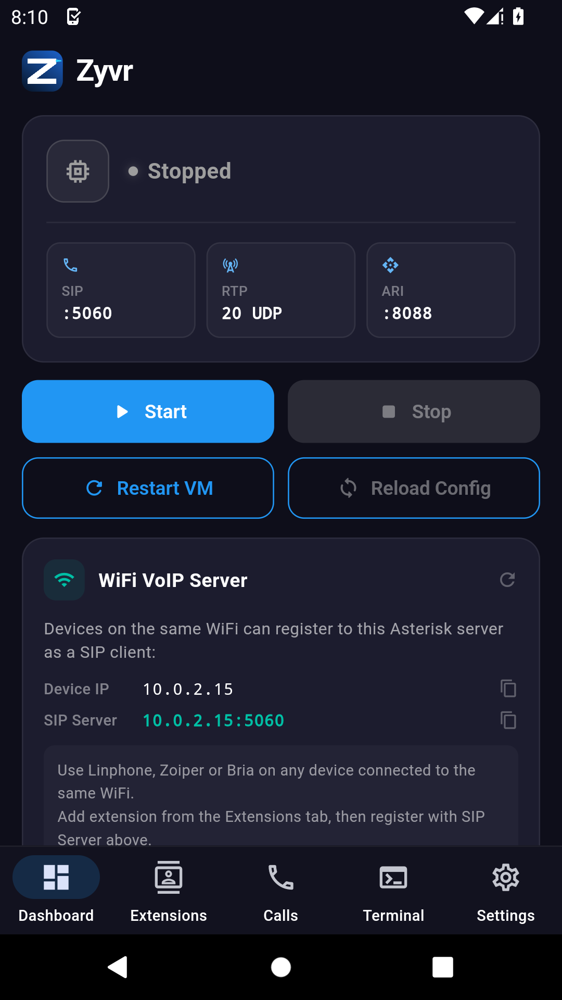
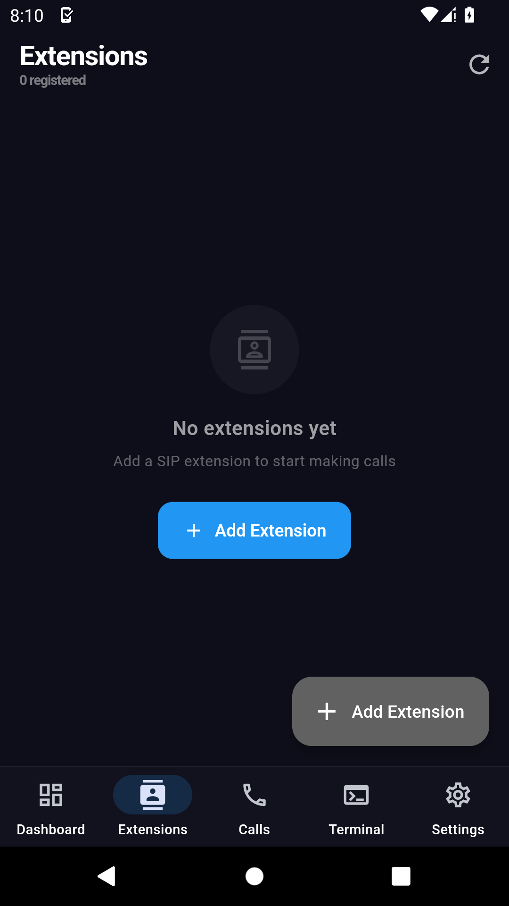
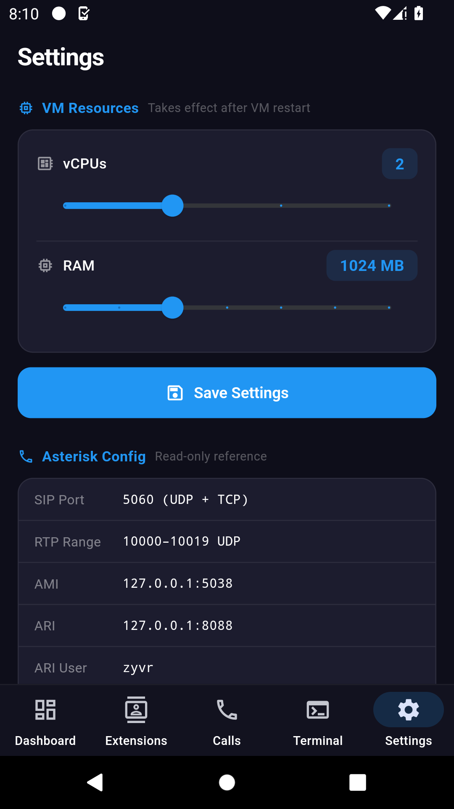
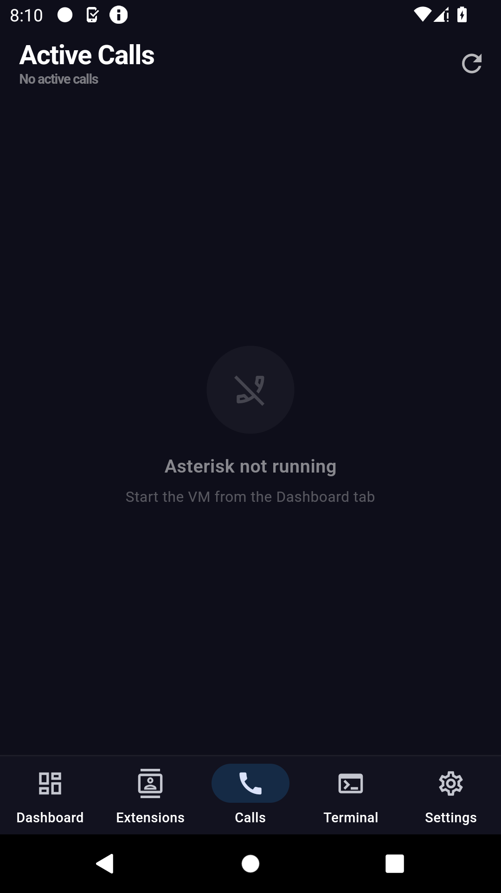
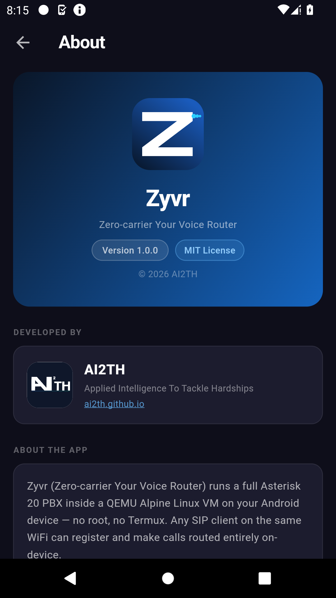
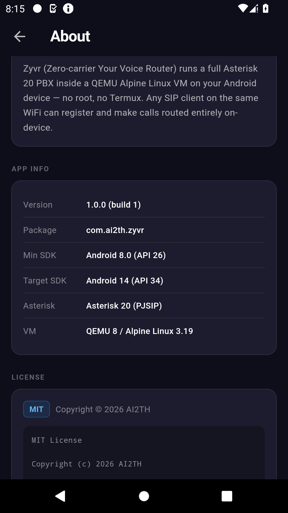
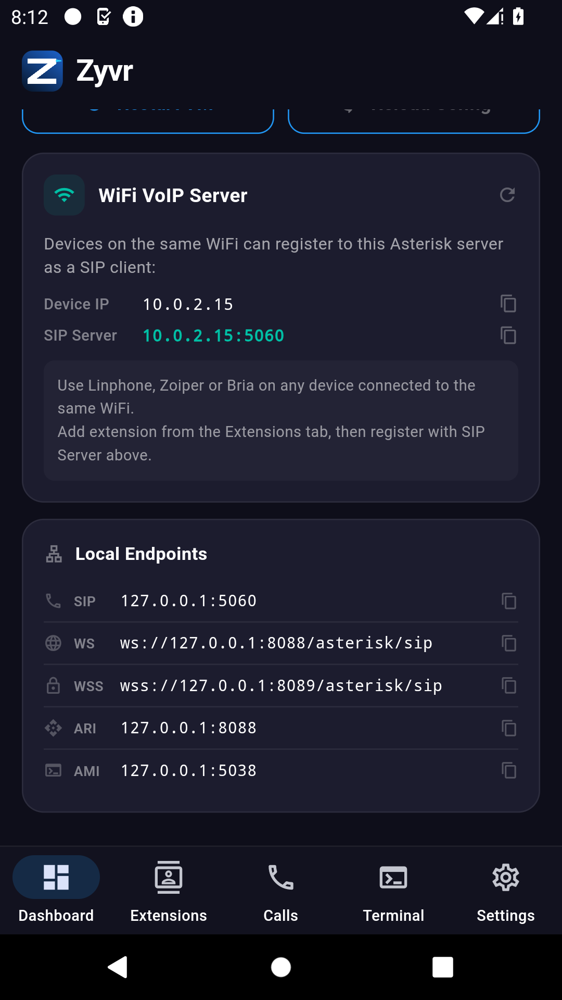
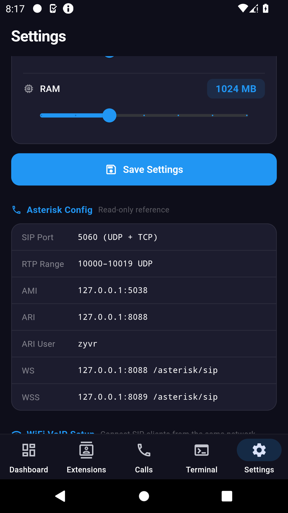
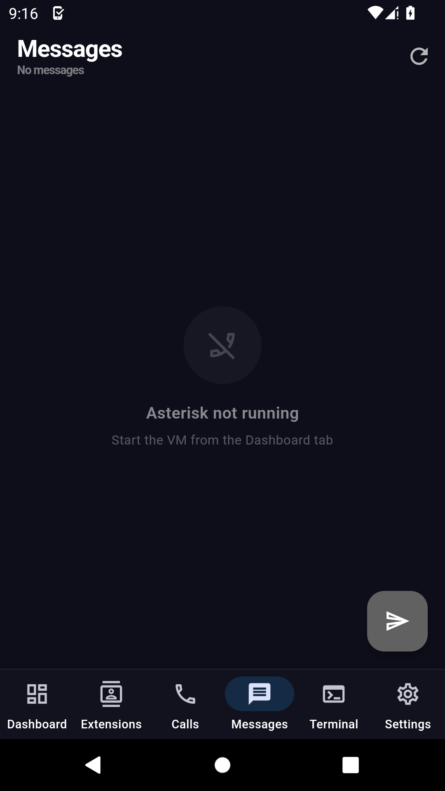

Zero-carrier Your Voice Router. A full Asterisk 20 PBX running on your phone. Manage SIP extensions, monitor live calls, send SIP text messages, and route calls — carrier-independent.
Screenshots from real device testing.








